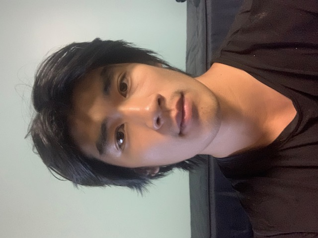
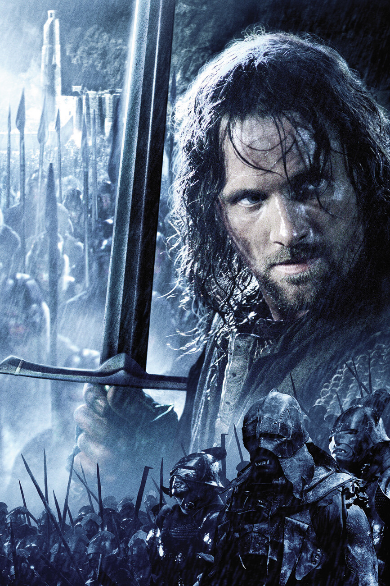

Firstly, I implemented two functions for calculating convolutions: one naive (4 nested for-loops) and one optimized (2 nested for loops).
Both functions are O(H*W*k^2) but the second function uses np.sum which applies vectorized optimizations, making the constant factor much smaller.
I used the equation padding = (k - 1) / 2 to have the output image be the same size as the input image.
code for convolutions
Next, I tested my convolution functions by applying convolutions with the box filter, dx filter, and dy filter on a selfie.

Original Image
after applying dx filterafter applying dy filterafter applying box filter
1.2: Finite Difference Operator
In this section, I computed the gradient magnitude image of this cameraman image by computing the dx and dy convolved versions of the image, and then computing the square root of the squares of their sums. This essentially combines the dx and dy convolutions, resulting in all of the "edges" of the image. dx essentially computes the vertical edges by showing any drastic horizontal changes, and similarly for dy with horizontal edges.
Then, in order to binarize between edge and non-edge, I computed the binarization of the gradient magnitude image, experimenting with different thresholds for when values should be cast to 1 vs 0.
Gradient Magnitude Image of Cameraman
Gradient Magnitude Image of Cameraman, binarized w/ cutoff = 120
1.3: Derivative Of Gaussian
The edges derivered from the binarized GMI in the previous section are a bit too noisy. To help alleviate this problem, we can first smooth the image via the Gaussian filter before creating the binarized GMI by applying the dx and dy filters, deriving the gradient magnitude, and binarizing.
Equivalently, we can first apply dx and dy to the Gaussian filter get the derivatives of the filter itself. We then convolve the image using these DoG filters, derive the gradient magnitude, and binarize.
blur image with Gaussian -> convolve blurred image with dx, dy filters -> compute GMI -> binarize (threshold=90)convolve Gaussian with dx, dy filters -> convolved image with DoG(x), DoG(y) filters -> compute GMI -> binarize (threshold=70)
2.1: Sharpening
We can "sharpen" an image by subtracting its blurred version. This can be implemented as a single filter which is known as the Laplacian.
The filter follows the equation ((1 + alpha)*e_filter - alpha*gaussian), where the e_filter is simply 0s everywhere except the point we are applying the filter on.
The variable alpha determines how much to sharpen the image by (i.e. how much blur to subtract), so increasing alpha will sharpen the image more.
As shown below, we can also sharpen the sharpened version of the image.
Taj MahalTaj Mahal sharpened, alpha=0.5Sharpened Taj Mahal sharpened, alpha=0.5
Japanese MacaqueMacaque sharpened, alpha=1Sharpened macaque sharpened, alpha=1
Given two images A and B, we can hybridize them in a special way by summing together a low-frequency version of A and high-frequency version of B.
This results in the optical phenomenon of seeing something that looks more like A when we view the image closer, and more like B when we view the image farther away.
This is because our eyes see less high frequencies as we move farther away from an image.
Here is an example provided by the CS180 course staff.
Here, I've attempted to create an image that shows Legolas from Lord of the Rings close up and Aragorn as one steps farther away (or squints one's eyes).
Legolas, original

Aragorn, original
Legolas + Aragorn
Here, I've tried to create a "sheep in wolf's clothing" -- from far away, the image appears to be a wolf, but as we look closer, it becomes a sheep.
Sheep, originalWolf, original
Wolf + Sheep combined
2.3 - 4: MultiResolution Blending
To achieve more seamless blends between images, the process is as follows.
1. Create Gaussian and Laplacian stacks. We increasingly blur the image and compute the Laplacian at each step, i.e. for lower and lower frequencies.
2. Create a Gaussian stack for the mask we want to use to define the boundary between the two images we are combining. 3. Multiply the most blurred image (at the bottom of the Gaussian stack) and the most blurred mask to get our base.
4. Repeatedly add the product of the next most blurred mask and the corresponding Laplacian. Essentially, we are trying to blur at various frequency levels for an overall smoother effect.
We can use both vertical / horizontal masks and irregular masks to achieve the same effect.